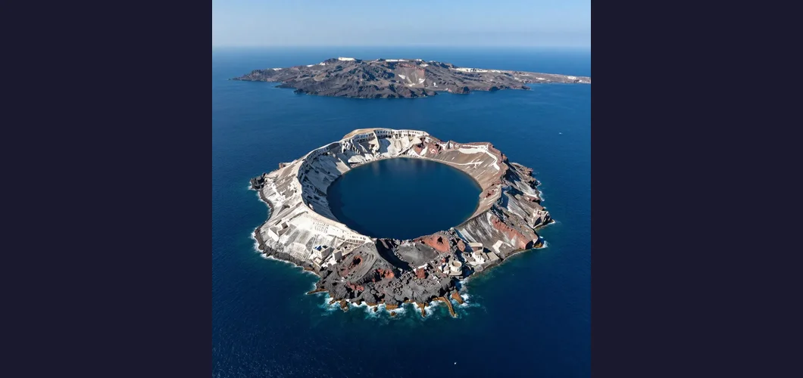
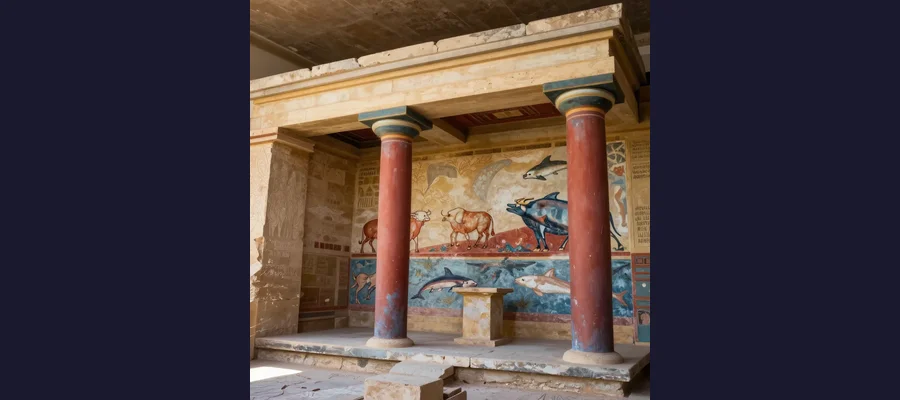
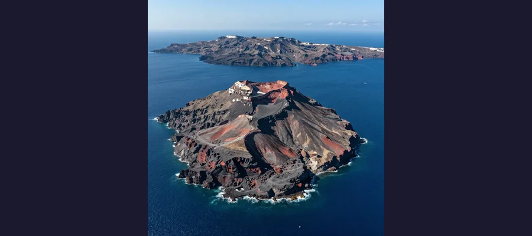

The Fall of the Minoans: How Earth's Biggest Eruption Toppled a Civilization

The Santorini caldera, remnant of the catastrophic eruption that may have doomed Minoan civilization.
In the glittering Aegean world of the second millennium BCE, one civilization stood above all others. The Minoans — named by modern archaeologists after the legendary King Minos of Crete — built Europe's first advanced urban society. They constructed vast palaces with running water and flush toilets, painted radiant frescoes of acrobats leaping over charging bulls, sailed the Mediterranean in ships laden with olive oil, wine, and saffron, and developed not one but two writing systems. Their island of Crete was a hub of trade and culture, a maritime empire whose influence stretched from the Levant to the Iberian Peninsula. And then, somewhere around 1450 BCE, it all fell apart. Palaces burned. Trade networks collapsed. The writing on the tablets changed from undeciphered Linear A to the Greek-language Linear B. The Minoan world was swallowed by the Mycenaean one, and one of the most spectacular civilizations of the ancient Mediterranean simply vanished — leaving behind ruins, legends, and a mystery that has consumed archaeologists for over a century.
The collapse of Minoan civilization is not a single event but a cascade of catastrophes — volcanic, seismic, political, and possibly climatic — that unfolded over roughly a century and a half. At its heart lies one of the most violent geological events in human history: the Minoan eruption of Thera (modern Santorini), a volcanic explosion so enormous that it ejected between 28 and 41 cubic kilometers of rock into the atmosphere, generated tsunamis that crashed across the Aegean, and may have darkened skies as far away as China and Egypt. But was Thera alone enough to destroy a civilization? Or was the eruption merely the first blow in a series of disasters — earthquakes, Mycenaean invasions, agricultural failure, and internal political decay — that together brought down Europe's first great society? The answers lie buried beneath the ash of Santorini and the rubble of Cretan palaces, and they tell us something profound about the fragility of even the most sophisticated human societies.
The Throne of Minos: Minoan Crete at Its Peak
The Minoan civilization emerged on Crete around 3100 BCE and reached its cultural zenith between 2000 and 1600 BCE, during what archaeologists call the Protopalatial and Neopalatial periods. The island's fertile plains, mild climate, and strategic position in the center of the eastern Mediterranean made it a natural crossroads for trade between Egypt, the Levant, Anatolia, and mainland Greece. The Minoans exploited this position to build what was essentially a thalassocracy — a sea empire — controlling maritime trade routes throughout the Aegean and beyond.
At the heart of Minoan society were the palace centers: vast architectural complexes that served as administrative hubs, religious centers, storage facilities, and ceremonial spaces. The largest and most famous was Knossos, excavated by the British archaeologist Sir Arthur Evans beginning in 1900. Knossos covered approximately 20,000 square meters and contained hundreds of rooms connected by a labyrinthine network of corridors — a layout that may have inspired the ancient Greek myth of the Labyrinth and the man-eating Minotaur. Other major palaces included Phaistos in southern Crete, Malia on the northern coast, and Zakros on the eastern tip of the island. Each palace was a self-contained economic unit, with massive storage magazines for olive oil, wine, and grain, workshops for potters and metalworkers, and elaborate ceremonial rooms decorated with vivid frescoes.
The Minoans were extraordinary engineers. The palace at Knossos featured a plumbing system that would not be equaled in Europe for over three thousand years: terracotta pipes carried clean water into the complex, and a network of stone drains carried wastewater out. Some rooms had what appear to be flush toilets. The palaces were multistory buildings with light wells, staircases, and painted columns that tapered downward — a distinctive Minoan architectural feature. The Minoans developed Linear A, a still-undeciphered writing system used for administrative records, and later Linear B, which was adapted from Linear A to write an early form of Greek and has been deciphered. Their art — bull-leapers, dolphins, saffron gatherers, blue monkeys — is among the most vibrant and naturalistic of any ancient culture, conveying a sense of joy and movement that feels startlingly modern.
🎨 The Bull-Leapers of Knossos
Among the most iconic images of Minoan civilization are the bull-leaping frescoes discovered at Knossos, depicting young athletes grasping a charging bull by the horns and vaulting over its back in a graceful arc. Whether these frescoes represent an actual sport, a religious ritual, or a mythological narrative is debated, but the bull occupied a central place in Minoan religion and culture. The famous rhyton (drinking vessel) in the shape of a bull's head from Knossos, carved from steatite with gilded wooden horns and rock crystal eyes, is one of the masterpieces of Bronze Age art. The connection between the Minoan bull cult and the later Greek myth of Theseus and the Minotaur — the half-man, half-bull monster imprisoned in the Labyrinth at Knossos — is one of the most tantalizing links between archaeology and mythology in the ancient world, suggesting that Greek cultural memory preserved a distorted echo of Minoan religious practice for over a thousand years.

The restored palace at Knossos showcases the artistic sophistication of Minoan civilization.
The Day the Sky Fell: Thera and the Great Eruption
Sometime around 1600 BCE — the exact date remains one of the most contested questions in Aegean archaeology — the volcano on the island of Thera (Santorini) erupted with a violence that is difficult to comprehend. With a Volcanic Explosivity Index (VEI) of 7, the Minoan eruption was one of the largest volcanic events in the last 10,000 years. It ejected between 28 and 41 cubic kilometers of dense rock equivalent into the atmosphere — roughly four times the volume of the 1883 Krakatoa eruption. The eruption column may have reached 36 kilometers into the stratosphere. Pyroclastic flows — incandescent avalanches of superheated gas, ash, and rock at temperatures exceeding 300 degrees Celsius — swept across Thera at hurricane speeds, burying the Minoan town of Akrotiri under meters of volcanic debris, much as Pompeii would later be buried by Vesuvius.
The eruption devastated the island of Thera completely, collapsing its central caldera and leaving only a crescent-shaped ring of land surrounding a deep, volcanic bay. But the destruction did not end with the ash. The eruption generated massive tsunamis that radiated outward across the Aegean. Crete, lying just 110 kilometers to the south, would have been struck by waves estimated at between 7 and 15 meters high — sufficient to destroy coastal settlements, devastate the Minoan fleet, and inundate low-lying agricultural land with saltwater. The ash fall over Crete, while not as catastrophic as on Thera itself, would have contaminated water supplies, buried crops, and disrupted agricultural production for years. Climate models suggest that the eruption may have caused temporary global cooling of several degrees, with effects detectable in tree-ring records from Ireland to China.
The town of Akrotiri on Thera, buried and preserved by the eruption, is one of the most extraordinary archaeological sites in the world. Often called the "Minoan Pompeii," Akrotiri was a prosperous settlement with multi-story buildings, elaborate frescoes, and an advanced drainage system. The ash preserved buildings up to three stories tall, with furniture, pottery, and food stores still in place. Remarkably, no human remains have been found at Akrotiri, suggesting that the population was evacuated before the final catastrophic phase of the eruption — a testament to either early warning signs or a series of precursor earthquakes that gave residents time to flee.
🌊 Tsunami: The Forgotten Weapon of Thera
While the ash and pyroclastic flows of the Thera eruption destroyed everything on the island itself, the tsunamis it generated may have been the real killers for Minoan Crete. Computer models developed by marine geologists suggest that the collapse of the Thera caldera into the sea would have produced waves reaching Crete's northern coast within 30 to 45 minutes of the eruption. These waves would have smashed into the island's coastal settlements — where many of the Minoan harbor towns were located — with devastating force. The destruction of the Minoan merchant fleet would have been particularly catastrophic: the Minoan economy was built on maritime trade, and the loss of ships, harbors, and coastal warehouses would have severed the commercial arteries that kept the civilization alive. Recent geological studies have identified tsunami deposits at several coastal sites on Crete, including deposits of marine sand, shells, and volcanic pumice found well inland — physical evidence that the waves were real and that they reached far enough to cause serious damage.
The Atlantis Connection
The destruction of Thera and the collapse of Minoan civilization have long been proposed as the historical basis for Plato's legend of Atlantis. In his dialogues Timaeus and Critias, written around 360 BCE, Plato described a great island civilization that was destroyed in "a single day and night of misfortune" by earthquakes and floods and sank beneath the sea. The parallels with Thera are suggestive: a powerful island civilization, destroyed by a catastrophic eruption and inundation, its remains lost beneath the waves. The Greek archaeologist Spyridon Marinatos, who first proposed the Thera-Atlantis connection in the 1930s, argued that the Minoan eruption and its aftermath were preserved in Egyptian records and eventually transmitted to Plato through Greek oral tradition. However, the Atlantis theory faces significant objections: Plato placed Atlantis beyond the Pillars of Hercules (the Strait of Gibraltar), not in the Aegean; he described it as existing 9,000 years before his time, not 1,200; and many of his details — elephants, chariots, a circular city plan — do not match what we know of Minoan Crete. Most scholars consider the Atlantis connection speculative but acknowledge that the Thera eruption may have contributed elements to a story that Plato constructed primarily as a philosophical allegory.

The Santorini caldera, visible evidence of one of the largest volcanic events in human history.
The Long Collapse: Eruption, Invasion, or Slow Decline?
The most important fact about the end of Minoan civilization is that it did not end with the Thera eruption. This is one of the most critical and often misunderstood aspects of the story. The eruption occurred around 1600 BCE, but the final destruction of the Minoan palaces and the takeover of Crete by the Mycenaeans did not occur until roughly 1450 BCE — a gap of approximately 150 years. During that century and a half, the Minoans rebuilt damaged palaces, continued trading, and maintained their cultural identity. The eruption was not a single hammer blow that obliterated Minoan civilization overnight. It was, at most, the first of several crises that collectively weakened the civilization until it could no longer resist external pressure.
- The Thera eruption (c. 1600 BCE) — Destroyed Minoan settlements on Thera and nearby islands; tsunamis battered Crete's northern coast; ash and pumice contaminated agricultural land; the Minoan fleet may have been largely destroyed
- Earthquakes and aftershocks — The Theran eruption was accompanied by massive seismic activity; multiple earthquakes struck Crete in the decades following the eruption, damaging palaces and infrastructure
- Agricultural disruption — Ash fall, saltwater inundation from tsunamis, and potential climate cooling would have reduced crop yields, weakened the economy, and strained the palace-based redistribution system
- Mycenaean encroachment (c. 1500-1450 BCE) — Mainland Greek warriors, speakers of an early form of Greek, gradually gained influence on Crete; Linear B tablets appear at Knossos, indicating Mycenaean administrative takeover
- Internal political fragmentation — The cumulative impact of natural disasters may have eroded the authority of the palace centers, creating power vacuums that the Mycenaeans exploited
📜 Linear B and the Takeover From Within
One of the most important pieces of evidence for the Mycenaean takeover of Crete is linguistic. The Linear B tablets found at Knossos — administrative records written on clay — are in an early form of Greek, not Minoan. This means that by the time these tablets were written, Greek-speaking administrators were running the palace at Knossos. The Minoans' own writing system, Linear A, has never been deciphered and represents a language that is not Greek and has no known living relatives. The appearance of Linear B at Knossos represents not just an administrative change but a cultural one: the Minoan world was being absorbed into the Mycenaean one. This was not necessarily a violent conquest. It may have been a gradual process of economic infiltration, political alliance, and elite adoption — more like a corporate merger than a military invasion. But the result was the same: by approximately 1450 BCE, the distinctive Minoan culture that had flourished for over 1,500 years had effectively ceased to exist as an independent civilization.
What the Collapse Teaches Us About Vulnerability
The fall of Minoan civilization is a case study in the vulnerability of complex societies to cascading disruptions. The Minoans built a civilization of extraordinary sophistication — palaces, writing, international trade, specialized artisanship, and a centralized administrative system that managed the production and distribution of food, oil, and manufactured goods across the island. But that very complexity created fragility. The palace system was the Minoan economy; when the palaces were damaged by earthquakes and tsunamis, the redistribution networks that fed the population broke down. The maritime trade routes were the Minoan lifeline; when the fleet was destroyed and harbors damaged, the flow of goods, raw materials, and wealth from abroad stopped. The centralized political authority was the Minoan glue; when crises eroded faith in the elite's ability to manage disasters, the social contract that held the system together weakened. These patterns — overdependence on centralized systems, vulnerability of trade networks, erosion of institutional authority during prolonged crises — are not unique to the Bronze Age. They are recurring themes in the collapse of complex societies throughout history, from the mythical Atlantis to the very real decline of the Western Roman Empire.
- Spyridon Marinatos — Greek archaeologist who first proposed the Thera eruption as the cause of Minoan collapse and later excavated Akrotiri; argued for the Atlantis connection
- Sir Arthur Evans — British archaeologist who excavated Knossos (1900-1931), named the Minoan civilization, and reconstructed portions of the palace
- Christos Doumas — Greek archaeologist who continued excavation at Akrotiri and has written extensively on Thera and the Minoan world
- Floyd McCoy — Geologist who has studied the impact of the Thera eruption on Aegean civilizations and modeled the tsunami effects on Crete
🔥 The Palace in Ashes
The collapse of Minoan civilization is a story about the limits of human achievement in the face of geological forces that dwarf anything we can build. The Minoans created something extraordinary — a society of light and color and water and art, perched on a beautiful island in the middle of the Mediterranean. They traded with pharaohs, painted frescoes of dolphins and leaping bulls, and wrote in scripts we still cannot read. They were the closest thing the Bronze Age Aegean had to a superpower. And yet, over the course of a century and a half, a combination of volcanic fury, seismic violence, ecological stress, and political opportunism by rivals brought it all to an end. The Thera eruption was not the sole cause — the civilization limped on for generations afterward — but it was the beginning of the end, the shock that set the cascade in motion. The lesson of Minoan Crete is not that civilizations are fragile — it is that they are resilient up to a point, and then they are not. Like the volcanic fate of Pompeii, the architectural mysteries of the Pyramids of Giza, the riddles surrounding Stonehenge, the ingenuity preserved in the Antikythera Mechanism, and the subterranean engineering of Derinkuyu's underground city, the ruins of Knossos and the ash of Akrotiri remind us that the past is not a museum of static achievements but a record of creation and destruction, of civilizations that rose, flourished, and were swept away by forces they could not control. The Minoans built the first great civilization in Europe. The earth, eventually, took it back.
Frequently Asked Questions
What caused the collapse of Minoan civilization?
There is no single cause. The Thera eruption around 1600 BCE was the most dramatic event, generating tsunamis, ash fall, and possibly global climate effects that severely damaged Minoan infrastructure and economy. However, the civilization survived for roughly 150 years after the eruption. The final collapse around 1450 BCE was likely the result of multiple factors: cumulative earthquake damage, agricultural disruption, the erosion of palace authority, and the Mycenaean takeover from mainland Greece, evidenced by the appearance of Greek-language Linear B tablets at Knossos.
Was the Thera eruption the same event as the destruction of Atlantis?
The connection between the Thera eruption and Plato's Atlantis is speculative and debated. The Greek archaeologist Spyridon Marinatos proposed in the 1930s that the destruction of Thera and the Minoan collapse were the historical basis for the Atlantis legend, arguing that the story was preserved in Egyptian records and transmitted to Plato. While some details are suggestive — an island civilization destroyed by earthquakes and floods — there are significant problems with the theory: Plato placed Atlantis far outside the Mediterranean and dated its destruction to 9,000 years before his time. Most scholars consider the Atlantis connection unproven but acknowledge that the Thera catastrophe may have contributed elements to Plato's philosophical allegory.
What was Akrotiri and why is it important?
Akrotiri was a prosperous Minoan settlement on the island of Thera (Santorini) that was completely buried by the eruption around 1600 BCE. Often called the "Minoan Pompeii," it is one of the best-preserved Bronze Age settlements in the Mediterranean. The volcanic ash preserved multi-story buildings, elaborate frescoes, furniture, pottery, and food stores — providing an extraordinary snapshot of Minoan daily life at the moment of destruction. Remarkably, no human remains have been found, suggesting the population was successfully evacuated before the final eruption phase.
Why can't we read Linear A?
Linear A was the writing system used by the Minoans for administrative and religious purposes. Despite decades of effort, it has never been deciphered. The problem is twofold: we do not know what language Linear A encodes, and there are very few surviving texts — most are short administrative records on clay tablets. Unlike Linear B, which was deciphered in the 1950s because it encoded an early form of Greek, Linear A appears to represent a completely unknown language with no living relatives and no bilingual texts (like the Dead Sea Scrolls or Rosetta Stone) to provide a key. The Minoan language remains one of the great unsolved puzzles of ancient linguistics.
📖 Recommended Reading
Want to learn more? Check out Fire in the Sea: The Santorini Volcano by Walter L. Friedrich on Amazon for a deeper dive into this fascinating topic. (As an Amazon Associate, we earn from qualifying purchases.)
References & Further Reading
- Wikipedia: Minoan Civilization — Comprehensive overview of the Bronze Age civilization on Crete including chronology, palaces, art, and writing systems
- Wikipedia: Minoan Eruption — Detailed account of the Theran eruption, its magnitude, dating debates, and historical impact
- Britannica: Minoan Civilization — Authoritative summary of Minoan history, culture, and the Thera catastrophe
- Wikipedia: Akrotiri (Santorini) — The remarkably preserved Bronze Age settlement buried by the Theran eruption
- The York Historian: The Collapse of Minoan Civilisation — Analysis of geological, anthropological, and meteorological factors in the collapse
- Wikipedia: Knossos — The largest Minoan palace complex and the administrative center of Bronze Age Crete
- Wikipedia: Linear A — The undeciphered Minoan writing system and the linguistic mystery it represents
Editorial note: reconstructions are continuously revised as imaging and inscription studies improve. See our Editorial Policy.